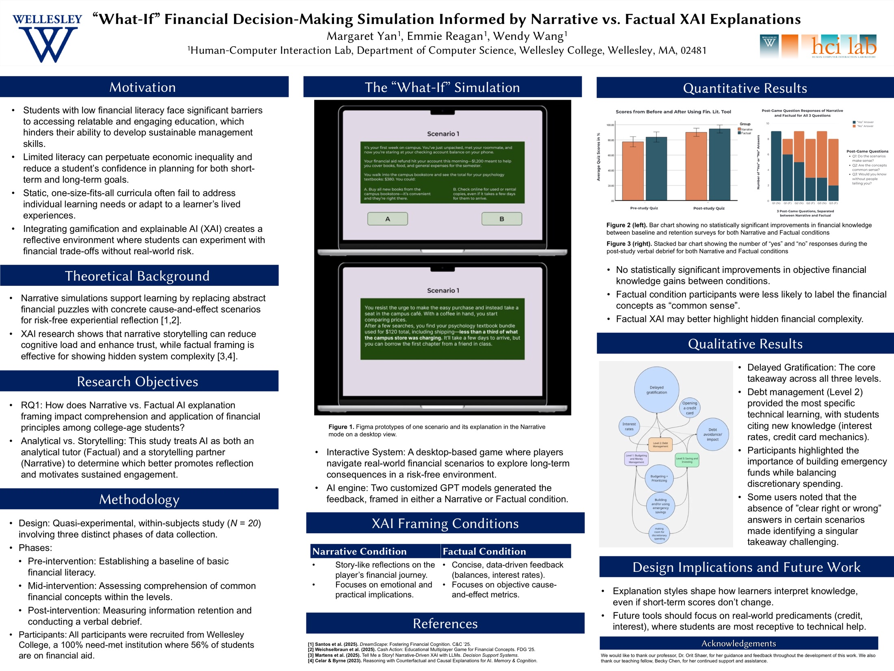
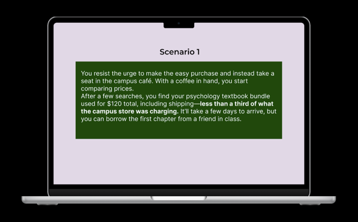

Framing Financial Feedback: Narrative vs. Factual AI Explanation in an Educational Simulation
The “What-If” Financial Decision-Making Simulation is a research-driven interactive game that helps college students build financial literacy by combining gamification with explainable AI: players work through simulated scenarios like budgeting, saving, and borrowing, and get immediate AI-generated feedback on their choices. It began as a group research project in MAS 366 Human–AI Interaction at Wellesley College in Fall 2025, and that version was accepted to ACM SIGDOC 2026. In Spring 2026 I continued the work with the professor as an independent study, taking it in a different direction.

Open the full poster (PDF) ↗- My role
- Your part in the group project, and in the independent study
- Timeline
- Fall 2025 (class project) · Spring 2026 (independent study)
- Context
- Group research project, MAS 366 Human–AI Interaction, Wellesley College. Continued as an independent study in the Human-Computer Interaction Lab.
- Team
- Maggie Yan, Wendy Wang, and Emily Regan, advised by Prof. Orit Shaer with teaching fellow Becky Chen
- Tools
- Custom GPT-4 models (ChatGPT), Figma
- Methods
- Two-condition quasi-experimental study, pre- and post-study knowledge quizzes, mid-study comprehension surveys, verbal debriefs, thematic analysis
- Participants
- 20 college students, randomly assigned to one of two conditions
What were we trying to find out?
How does narrative versus factual framing in AI-generated feedback affect how college students comprehend and internalize financial literacy concepts? And what does that suggest about how the form of an explanation shapes a learner’s relationship to the content?
Why this mattered
Students with limited financial literacy often face barriers to practical, relatable financial education. Traditional programs lean on abstract concepts and one-size-fits-all curricula, so students struggle to connect what they learn to everyday decisions like budgeting, saving, and weighing spending against investing.
Serious games can help by letting people experiment with consequences without real-world risk, and AI can give immediate feedback on each choice. But the form that feedback takes is itself a communication design decision. The same outcome can be explained as a story or as a set of numbers, and prior work on explainable AI shows that narrative framing can improve comprehension and trust. What hadn’t been studied was how those explanation styles work in a serious game for non-expert learners.
How we approached it, and why
We held everything constant except the explanation style. Both versions of the game deliver the same scenarios, the same consequences, and the same underlying financial principles; only the surface language changes.
| Method | Why this method | What it gave us |
|---|---|---|
| Two explanation conditions | To isolate explanation style. Factual feedback uses balances, interest calculations, and financial terms; narrative feedback tells the same thing as a story in everyday language. | Two versions of the game that differ only in how feedback is phrased. |
| Custom GPT-4 models, finalized in advance | To generate both styles from the same content, then lock every explanation before data collection so live prompting couldn’t introduce variance. | Identical content within each condition, delivered through a high-fidelity, visual novel–style Figma prototype. |
| Pre- and post-study quizzes | To track how well participants acquired and retained key financial principles. | Knowledge gains for each condition. |
| Mid-study comprehension surveys | To capture how participants understood the concepts while playing, not just afterward. | Open-ended responses for thematic analysis. |
| Verbal debrief | To ask whether the scenarios made sense, whether the concepts felt like common sense, and whether participants would have known them without being told. | The pattern that became our main finding. |
What I actually did
-
Framing the question
Fall 2025 · MAS 366We grounded the project in communication design, which treats learners as active readers whose understanding depends on how information is framed, and in XAI research comparing narrative and feature-based explanations. Your part in framing it.
-
Building the simulation
Fall 2025 · MAS 366Players work through budgeting, saving, and borrowing scenarios across three levels. Two custom GPT-4 models, one per condition, generated the feedback, which we finalized and built into an interactive Figma prototype styled like a visual novel. Which parts you built, and an idea you threw away.
-
Running the study
Fall 2025 · MAS 366Twenty college students were randomly assigned to the narrative or factual version. Each took a pre-study quiz, played through the levels with a mid-study comprehension survey, then took a post-study quiz and a short verbal debrief. Your part in running and analyzing the sessions.
-
Taking it further as an independent study
Spring 2026 · Human-Computer Interaction LabThe new direction you took with the professor, and why the class version left you wanting to ask it.


What we learned
Explanation style changed how “obvious” finance felt
In the debrief, participants in the factual condition were less likely to describe the financial concepts as “common sense.” Data-centered feedback may make financial concepts feel less self-evident, even on first encounter.
Style shapes a learner’s stance, not just the information
Since both conditions delivered identical information, the explanation’s form is the most likely reason for the difference. It may shape how learners position themselves relative to the content, and what they perceive as new knowledge.
Delayed gratification came up everywhere
Across both conditions, mid-study surveys surfaced budgeting and prioritization, debt avoidance, and interest rate mechanics, with delayed gratification appearing at all three levels. The simulation’s structure supported reflection regardless of style.
No difference in measured knowledge gains
Quiz scores didn’t differ significantly between conditions. With 20 participants from one selective college, a ceiling effect may have hidden short-term differences.
Where it landed
Framing Financial Feedback: Narrative vs. Factual AI Explanation in an Educational Simulation
In Proceedings of the 44th ACM International Conference on Design of Communication (SIGDOC ’26), St. Paul, MN. To appear after October 24, 2026.
Looking back
What worked
One or two things you’d do the same way again.
Limitations
A small sample (N = 20) from a single private liberal arts college, where students may have more baseline financial exposure, which could produce a ceiling effect.
What’s next
Expanding the simulation into a web app with a live financial dashboard, a conversational AI advisor, and a what-if toggle; recruiting more broadly; measuring need for cognition and narrative transportation as moderators; and testing retention after a week.